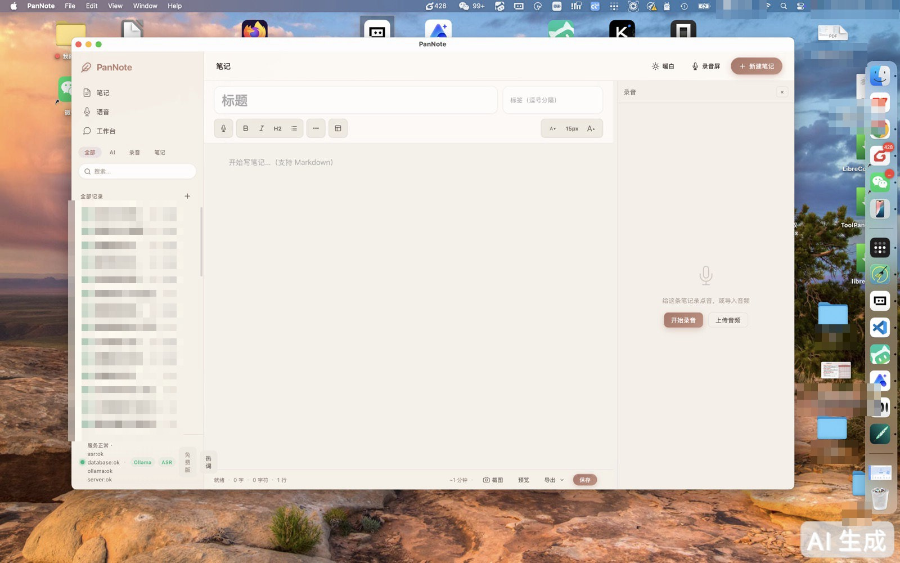
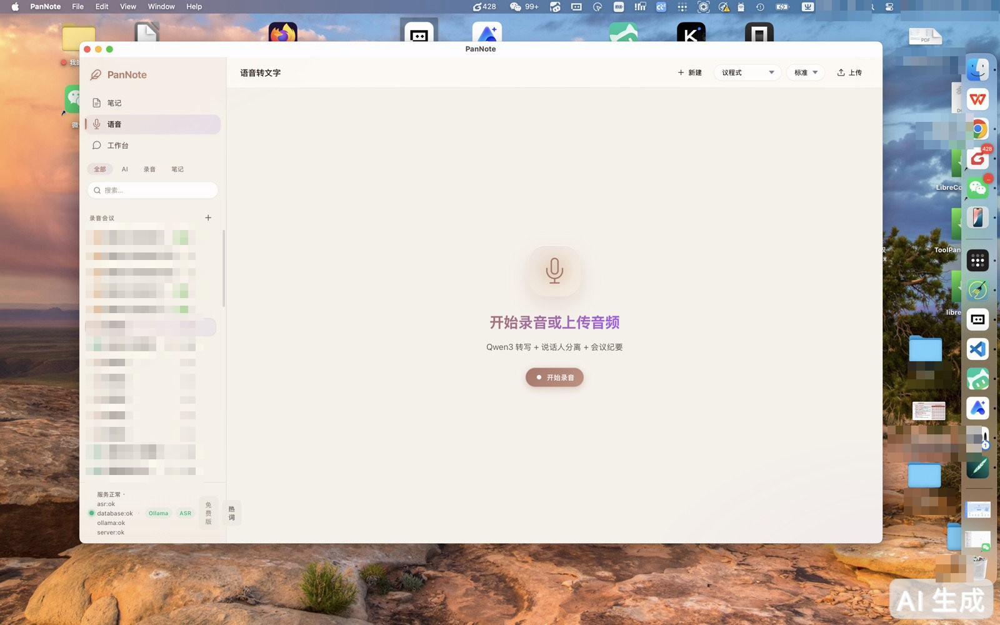

嵌入式 Paraformer 转写引擎打包在应用内，无需安装 Python、无需配置环境，拖进应用文件夹就能开始转写会议录音。实测 10 秒音频段约 0.45 秒转完，实时无积压。
录音文件、转写文本、AI 纪要全部保存在本机数据库，不上传任何云端。转写在本地跑，纪要模型（Ollama）也在本地跑。开什么会，只有你自己知道。
录音按 10 秒一段落盘并持久化状态，应用被杀、电脑死机、强制关机——重启后自动扫描未完成段落，从断点继续转写，一段不丢。
简明、标准、详细三档纪要模板，另有拜访记录、项目复盘专用模板。基于完整转写文本生成，关键结论直接可引用。
发现错字随手改，系统自动提取你的修正习惯并生成热词建议，专业术语、人名、产品名的识别准确率随使用持续提升。
每日自动备份数据库与近 7 天音频；磁盘占用超过水位线自动归档最旧会议的音频文件（文本永不删除），不用手动操心。


开源（MIT 协议），当前阶段全功能免费自用。后续若提供云能力增强，会在仓库公示说明，本地核心功能不收费。
不会。转写引擎运行在应用进程内，纪要模型运行在本地 Ollama。默认配置下没有任何网络请求携带你的音频或文本。
当前版本尚未做 Apple 公证（正式推广前会处理），macOS 会拦截所有未公证应用。首次打开需要手动放行一次：
如仍无法打开，在终端执行：xattr -cr /Applications/PanNote.app 后重试。
macOS 13 及以上（Intel 与 Apple 芯片）。Windows 与 Linux 支持在路线图中。